Kicksecure for KVM
About this KVM Page |
|
|---|---|
Support Status |
stable |
Difficulty |
medium |
Support |
|

 [1]) logo|thumb" width="200" alt="KVM virtualizer (unofficial [1]) logo|thumb" />
[1]) logo|thumb" width="200" alt="KVM virtualizer (unofficial [1]) logo|thumb" />
This is the KVM flavor of the Kicksecure project.
 COMMUNITY SUPPORT ONLY : THIS WHOLE WIKI
PAGE is only supported by the community. Kicksecure
developers are very unlikely to provide free support
for this content. See Community Support for further information,
including implications and possible alternatives.
COMMUNITY SUPPORT ONLY : THIS WHOLE WIKI
PAGE is only supported by the community. Kicksecure
developers are very unlikely to provide free support
for this content. See Community Support for further information,
including implications and possible alternatives.
Introduction
Much of the warnings and use case instructions from Whonix KVM, such as running the OS headlessly or using shared folders, are applicable.
For more details about Kicksecure, check Kicksecure pages.
Support tickets should be forwarded to the KVM subforum.
Install KVM
For Kicksecure on Intel / AMD, install:
sudo apt install --no-install-recommends qemu-system-x86 qemu-system-gui qemu-system-modules-spice qemu-utils libvirt-daemon libvirt-daemon-driver-qemu libvirt-daemon-driver-storage libvirt-daemon-driver-nodedev libvirt-clients virt-manager gir1.2-spiceclientgtk-3.0 passt ovmf swtpm swtpm-tools safe-rm xz-utils
For Kicksecure on PowerPC, install:
sudo apt install --no-install-recommends qemu-system-ppc qemu-system-gui qemu-system-modules-spice qemu-utils libvirt-daemon-system libvirt-daemon-driver-qemu libvirt-daemon-driver-storage libvirt-daemon-driver-nodedev libvirt-clients virt-manager gir1.2-spiceclientgtk-3.0 passt swtpm swtpm-tools safe-rm xz-utils
Build from Scratch
Advanced users are encouraged to build Kicksecure images for high security assurance.
Download Kicksecure
 By downloading, you acknowledge that you have read,
understood and agreed to our Terms of
Service and License
Agreement.
By downloading, you acknowledge that you have read,
understood and agreed to our Terms of
Service and License
Agreement.
GUI

stable LXQt
Optional: Digital signature verification.
Version (stable): 18.2.1.9
Only experienced users: This step is only useful and recommended for very experienced users. All other users please skip this step.
- Digital signatures are a tool enhancing download security. They are commonly used across the internet and nothing special to worry about.
- Optional, not required: Digital signatures are optional and not mandatory for using Kicksecure, but an extra security measure for advanced users. If you've never used them before, it might be overwhelming to look into them at this stage. Just ignore them for now.
- Learn more: Curious? If you are interested in becoming more familiar with advanced computer security concepts, you can learn more about digital signatures here: Verifying Software Signatures
Choose your verification method below. This step requires that you have already downloaded Kicksecure LXQt.
Read Verify the images to learn more about the verification process for the images.

testers LXQt
Optional: Digital signature verification.
Version (testers): 18.1.4.2
Only experienced users: This step is only useful and recommended for very experienced users. All other users please skip this step.
- Digital signatures are a tool enhancing download security. They are commonly used across the internet and nothing special to worry about.
- Optional, not required: Digital signatures are optional and not mandatory for using Kicksecure, but an extra security measure for advanced users. If you've never used them before, it might be overwhelming to look into them at this stage. Just ignore them for now.
- Learn more: Curious? If you are interested in becoming more familiar with advanced computer security concepts, you can learn more about digital signatures here: Verifying Software Signatures
Choose your verification method below. This step requires that you have already downloaded Kicksecure LXQt.
Read Verify the images to learn more about the verification process for the images.

CLI
stable CLI
Optional: Digital signature verification.
Version (stable): 18.2.1.9
Only experienced users: This step is only useful and recommended for very experienced users. All other users please skip this step.
- Digital signatures are a tool enhancing download security. They are commonly used across the internet and nothing special to worry about.
- Optional, not required: Digital signatures are optional and not mandatory for using Kicksecure, but an extra security measure for advanced users. If you've never used them before, it might be overwhelming to look into them at this stage. Just ignore them for now.
- Learn more: Curious? If you are interested in becoming more familiar with advanced computer security concepts, you can learn more about digital signatures here: Verifying Software Signatures
Choose your verification method below. This step requires that you have already downloaded Kicksecure CLI.
Read Verify the images to learn more about the verification process for the images.
testers CLI
Optional: Digital signature verification.
Version (testers): 18.1.4.2
Only experienced users: This step is only useful and recommended for very experienced users. All other users please skip this step.
- Digital signatures are a tool enhancing download security. They are commonly used across the internet and nothing special to worry about.
- Optional, not required: Digital signatures are optional and not mandatory for using Kicksecure, but an extra security measure for advanced users. If you've never used them before, it might be overwhelming to look into them at this stage. Just ignore them for now.
- Learn more: Curious? If you are interested in becoming more familiar with advanced computer security concepts, you can learn more about digital signatures here: Verifying Software Signatures
Choose your verification method below. This step requires that you have already downloaded Kicksecure CLI.
Read Verify the images to learn more about the verification process for the images.
Decompress
1. Change directory.
The decompression command below must be run from within the folder
where you downloaded the archive (most likely in
~/Downloads or ~/ (home) folder).
Note: Adjust the folder if you stored the archive elsewhere.
cd ~/Downloads
2. Do not use unxz! Extract the images
using GNU tar.
3. Make sure the xz-utils package is
installed on your system. [2]
If you followed the installation instructions above, this should already be the case.
4. Decompress.
If your filesystem does support Sparse Files [3]:
tar -xSvf Kicksecure*.libvirt.xz
If your filesystem does not support sparse files:
tar -xvf Kicksecure*.libvirt.xz
5. Wait.
Be aware that the extraction process may take an exceptionally long time to complete. It is recommended to allow the terminal to run uninterrupted after executing the command to ensure successful decompression.
6. Done.
Importing Kicksecure VM Template
The supplied XML files serve as a description for libvirt and define the properties of a Kicksecure VM and the networking it should have.
- Define the properties of Kicksecure VM
virsh -c qemu:///session define Kicksecure*.xml
Tell libvirt to stop trying to adjust resources limits and force libvirt to skip it
Libvirt tries to set the VM process maximum core dump file size to "unlimited", but the system will blocks it because unprivileged users not allowed to raise their own hard resource limits (setrlimit).
Since there is no root access to modify system-wide limits, then we need to tell libvirt to stop trying to adjust this limit by forcing libvirt to skip resource limits.
So to override the memory/core limits for QEMU inside user configuration directory:
- Create new directory:
mkdir -p ~/.config/libvirt/
- Make and edit new file:
nano ~/.config/libvirt/qemu.conf
- Copy and Paste:
max_core = 0 max_processes = 0 max_files = 0
- Save and exit Ctrl+x then y then Enter.
- Reboot your system so the changes can take effect.
- Done
Image File Installation
The XML files are configured to use newly created user level path
~/.local/share/images instead of the default storage
location of /var/lib/libvirt/images. The image files can be
moved or copied, depending on storage constraints.
Notes:
- The directory must be created before copying or moving the images. To create the path [4]:
mkdir -p ~/.local/share/images
- The following steps move or copy the images so the virtual machines can boot.
Either move or copy.
Moving Kicksecure Image Files
Move the image files.
mv Kicksecure*.qcow2 ~/.local/share/images/Kicksecure.qcow2
Copying Kicksecure Image Files
Copy the image files.
Kicksecure disk images are sparse files, meaning they expand as data is written rather than allocating their entire size (100GB) outright. Sparse files require special commands when they are copied to ensure they retain this property; otherwise, they will occupy the full disk space.
cp --sparse=always Kicksecure*.qcow2 ~/.local/share/images/Kicksecure.qcow2
Start
Virtual
Machine Manager (Virt-Manager) GUI default is
qemu:///system not qemu:///session
If Kicksecure VM not shown in the default opening of Virt-Manager,
Then this is because it assumes your VMs on default
qemu:///system, so you need to change that to
qemu:///session:
Go to Virtual Machine Manager → File →
Add Connection... → Switch Hypervisor from
QEMU/KVM to QEMU/KVM user session → Tick
Autoconnect → Connect.
Images:
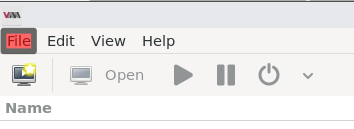
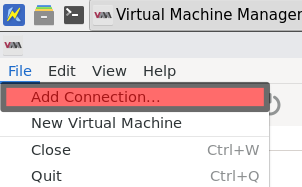
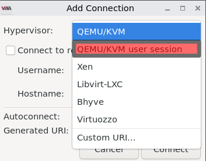

After that start Kicksecure VM.
If the virt-manager always going to show qemu:///system
whenever you start the virt-manager, then to solve this run:
echo "export LIBVIRT_DEFAULT_URI='qemu:///session'" >> ~/.zshrc source ~/.zshrc
(If someone is using Bash instead of Zsh, change .zshrc
to .bashrc, This tells your entire user profile including
the GUI to always target your local user session by default).
Using Kicksecure with LXQt as Graphical User Interface (GUI) Desktop
Start Virtual Machine Manager:
Start Menu → System Tools →
Virtual Machine Manager
Start Kicksecure:
click on Kicksecure → click Open →
click the play symbol
Inserting dGPU (e.g Nvidia) directly to VM
One of the unique features of KVM is that it allows the host's dedicated/discrete GPU (e.g Nvidia) to be inserted directly into the VM instead of using only virtualized graphics.
There are hardware and software requirements that need to be met:
Hardware
1. Make sure you have an Integrated GPU (built-in GPU in your processor). Most PCs with a dGPU also come with an iGPU (hybrid) by default, but sometimes that is not the case [5]. In order to check that, run:
lspci -Dnnk | grep -A4 -E 'VGA|3D|Audio'
Example of the expected output (CPU/iGPU):
VGA compatible controller [0300]: Intel Raptor Lake-S UHD Graphics2. To make sure you have a dGPU available, you can run the same command, and it will show, for example:
0000:01:00.0 VGA compatible controller [0300]: NVIDIA Corporation AD107M [Geforce RTX 4060 Max-Q / Mobile] [10de:28a0]
kernel driver in use: nouveau
0000:01:00.1 Audio device [0403]: NVIDIA Corporation AD107 High Definition Audio Controller [10de:22be]Note: These IDs/addresses for the dGPU
0000:01:00.0, 10de:28a0,
0000:01:00.1, 10de:22be we are going to use
them later.
3. Check for Input-output memory management (IOMMU) support:
grep --color=auto -E iommu /proc/cmdline
The important output if you have Intel:
intel_iommu=onSoftware
SYSMAINT side (root/admin)
Boot into SYSMAINT Then follow these steps:
GRUB
- Add these parameters to Grub by creating a file in
/grub.d:
sudoedit /etc/default/grub.d/50_user.cfg
- Then add the IOMMU and dGPU readings you obtained above:
GRUB_CMDLINE_LINUX="$GRUB_CMDLINE_LINUX intel_iommu=on vfio-pci.ids=10de:28a0,10de:22be"
Blacklist the host from loading Nvidia drivers
- Create and edit a file in
modprobe.d:
sudoedit /etc/modprobe.d/blacklist-nvidia.conf
- Add these entries to the blacklist:
blacklist nouveau blacklist nvidia blacklist nvidia_drm blacklist nvidia_modeset blacklist nvidia_uvm
Configure dracut to load VFIO early
- Create and edit a file in
dracut.conf.d:
sudoedit /etc/dracut.conf.d/vfio.conf
- Add the following (Keep the spaces inside the quotation marks):
force_drivers+=" vfio vfio_pci vfio_iommu_type1 " omit_drivers+=" nouveau nvidia nvidia_drm nvidia_modeset nvidia_uvm "
force_drivers makes dracut attempt to load modules
early, while omit_drivers excludes the listed drivers from
the generated initramfs.
Configure memory-lock limits
- Edit per-account PAM login limits:
sudoedit /etc/security/limits.d/99-memlock.conf
- Add:
user soft memlock unlimited user hard memlock unlimited
- For libvirt launched through the user's systemd manager, edit:
sudo systemctl edit "user@$(id -u user).service"
- Add at the bottom:
[Service] LimitMEMLOCK=infinity
Rebuild the initramfs and GRUB, then reboot
GRUB
sudo update-grub
Dracut
sudo dracut --force --regenerate-all
Create persistent permissions for the verified group
readlink /sys/bus/pci/devices/0000:01:00.0/iommu_group
- The output should be something similar to:
../../../../kernel/iommu_groups/17Note: The important number we are looking for in our
example is 17 (it may be different in your case).
sudoedit /etc/udev/rules.d/70-vfio-user.rules
- Add:
SUBSYSTEM=="vfio", KERNEL=="17", OWNER="root", GROUP="user", MODE="0660"
- Then reboot:
sudo reboot
- Then boot into user.
User
Note: Don't combine inserting a dGPU with 3D Graphics Acceleration in the VM (revert the 3D steps if you have enabled it).
- Go to virt-manager main window (the window listing your virtual machines), then go to:
Edit → Preferences → General → tick "Enable XML editing"
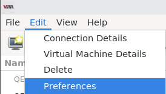
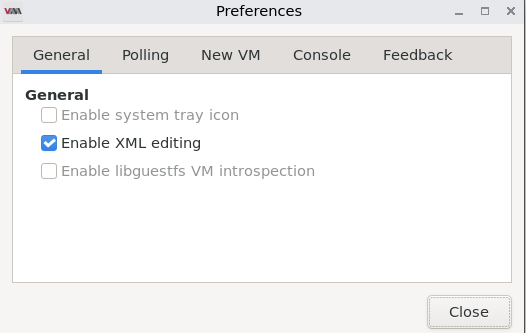
- After that, select the VM to which you want to attach the GPU, then click the Open button. Click the light bulb icon (Show virtual hardware details), go to the bottom, and click Add Hardware. Go to PCI Host Devices, select your graphics card, then click Finish.
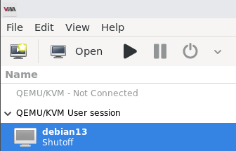
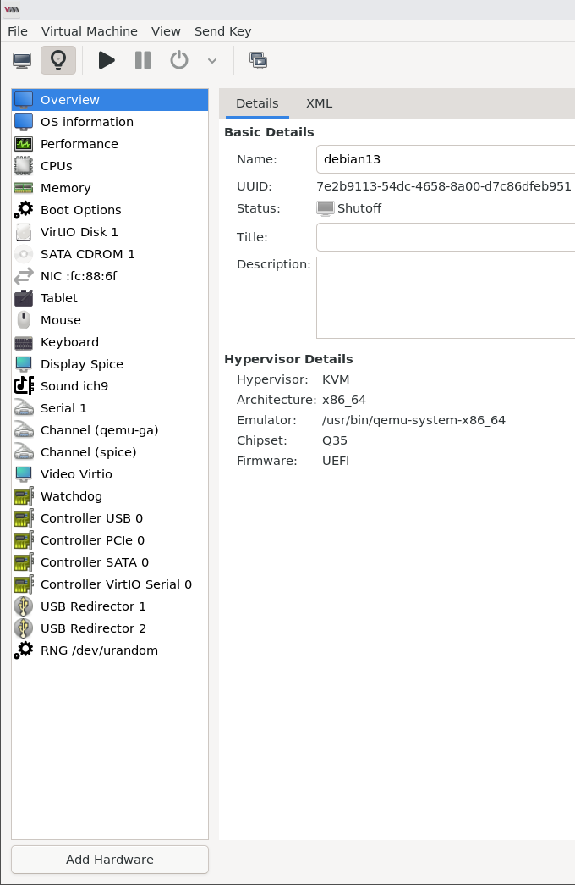
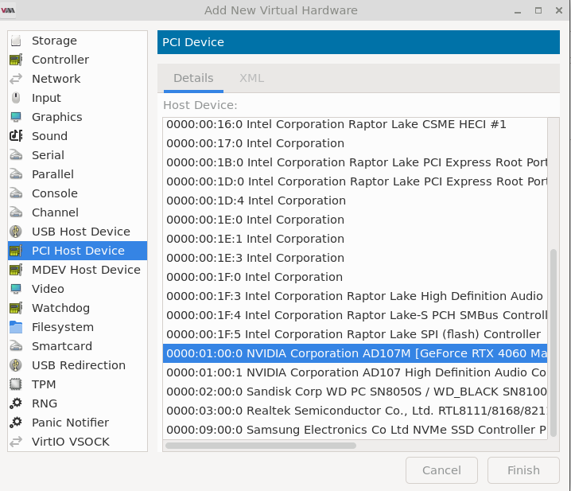
- Go to the added PCI/graphics card, then click XML and change
managed="yes"tomanaged="no". Then click Apply (this is important for theqemu:///session/user-level case).
<hostdev mode="subsystem" type="pci" managed="yes>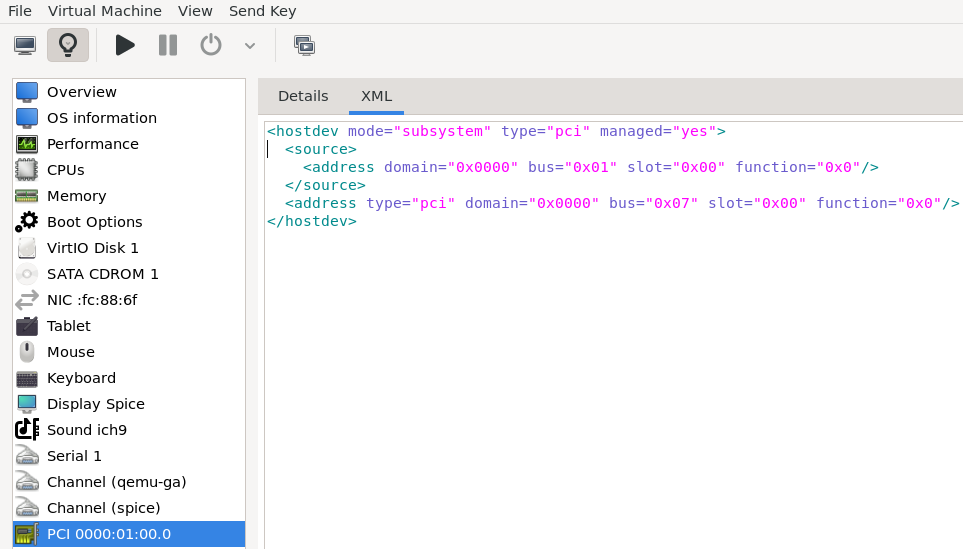
<hostdev mode="subsystem" type="pci" managed="no>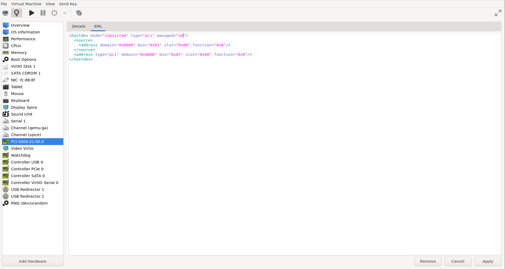
- After that, run your VM, and the graphics card should appear in the VM (don't forget to install the graphics card driver in the VM as well).
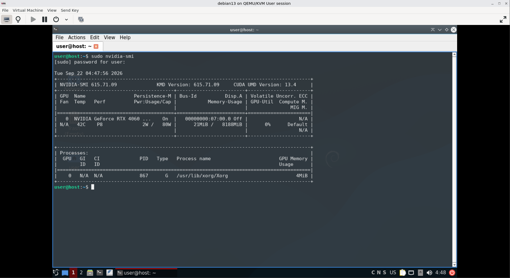
- Done
Uninstall
If you want to remove Kicksecure KVM VM, the Kicksecure network, and Kicksecure image, click Expand on the right.
1. Power off the VM you want to Remove (If not already).
virsh -c qemu:///session destroy Kicksecure
2. Remove the KVM VM settings.
virsh -c qemu:///session undefine Kicksecure
3. Delete the images.
Note: All data will be lost unless it is backed up first. Adjust the paths to the images as appropriate.
safe-rm ~/.local/share/images/Kicksecure.qcow2
Shared Folders
See KVM, Shared_Folders.
Footnotes
- ↑ 1 2 re-creation
- ↑ https://forums.whonix.org/t/tar-child-xz-cannot-exec-no-such-file-or-directory-install-xz-utils-package/16708/7
- ↑ tar --extract --sparse --verbose --file=Kicksecure*.libvirt.xz
- ↑ Another less practical and not guaranteed method
could be used by running
virt-manager -c qemu:///session. This will open virt-manager, triggering the default storage path, and the user will see the Kicksecure image there. However, if the user tries to run it, it will not work because the image has not yet been transferred to the storage path (so it has a practical issue if the user is not aware of this). Also, there is no guarantee that it will work in every case on every distribution. - ↑ https://forums.kicksecure.com/t/black-login-screen-crash-due-to-nouveau-gsp-killing-labwc/1556/17